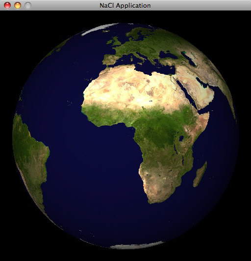
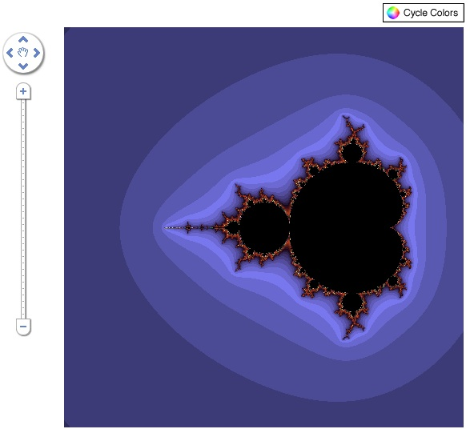

This page tells you how to install Native Client and run demos, both in and outside of the browser. On Linux and Mac OS X, you can also recompile demos and run them as standalone applications.
Note: If you've already installed a previous version of the Native Client plug-in, you don't need to uninstall it. Just get the software and install the plug-in.
These instructions tell you the easiest path to take: downloading the pre-built binaries and toolchain. If you want to keep up-to-date with the latest source code and you don't mind building, you should instead get buildable source code. For details, see http://code.google.com/p/nativeclient/wiki/Source.
To run the examples as Native Client modules, you need Native Client, Python, and a browser — we recommend Firefox 3. If you want to develop your own Native Client modules, you'll also need platform-specific development tools such as Xcode on the Mac and Visual Studio on Windows, as described in the platform details pages for Linux, Mac, and Windows.
Technical detail: Native Client doesn't itself require Python. We use Python for scripts such as those that build and run examples and that install the Native Client plug-in. We're working on installers that are easier to use and don't require Python.
Here's how to install Native Client and test your version of Python.
Choose an installation directory (install_dir). Because Native Client is frequently updated, you might want a path that indicates the download or build date. For example:
/home/me/NaCl/Testing/2009-02-11 (Linux)
/Users/me/NaCl/Testing/2009-02-11 (Mac)
C:\NaCl\Testing\2009-02-11 (Windows)
Important: Make sure the full path of install_dir contains no spaces.
Download
the Native Client .tgz or .zip file for your platform.
Linux:
tar xvf nacl_linux*.tgz
Mac:
tar xvf nacl_mac*.tgz
Windows:
Do not use Cygwin unzip.
Instead, you can use the built-in Windows support or 7-Zip.
For example: In the file manager,
right-click the nacl_windows_*.zip file
and choose Extract All.
Test your version of Python.
python -V #Note: That's an uppercase 'V'
The output should be something like
Python 2.4.3.
If your system can't find python
or the version isn't 2.4 or 2.5,
get the right version of Python
and make sure it's in your path.
(2.6 might work, but we haven't tested it;
2.3 does not work.)
For more information, see the
details page for your platform —
Linux,
Mac, or
Windows.
Important: Make sure the full path to Python contains no spaces.
Windows note (Cygwin): Do not use Cygwin's version of Python. Instead, use the standard Python distribution. For details, see the Windows platform details page.
Now you'll learn how to run an example app in Native Client.
Technical detail: You might be wondering why we start you off with a command-line application, rather than with the browser. The reason is that when you create your own Native Client modules, it's easier to get started if you're working outside the browser.
In a terminal window, go to the earth demo's directory.
Linux or Mac:
cd install_dir/build/native_client/tests/earth
Windows:
cd install_dir\build\native_client\tests\earth
Run the earth demo as a Native Client application:
python run.py
A window should appear that contains a spinning, ray-traced globe. The title of the window, NaCl Application, indicates that you're running a Native Client module in a dedicated process.
You can quit the earth demo by clicking the close (X) button in its window frame. Or just wait; it quits automatically after displaying a few thousand frames.
Troubleshooting:
If no window appears
and you get a message starting with
ERROR: Cannot find Native Client executable,
you've probably downloaded the source-only distribution of Native Client.
You can either
download the distribution for your platform
(Linux, Mac, or Windows)
or build Native Client and its toolchain.
[PENDING: What other problems have people run into?]
Now it's time to run some Native Client modules inside a browser. To do so, you need to install the Native Client plug-in and then load a page that refers to one or more Native Client modules.
Go to the native_client directory.
Linux or Mac:
cd install_dir/build/native_client
Windows:
cd install_dir\build\native_client
Bookmark this page,
both online
and in your Native Client distribution
(install_dir/build/native_client/documentation/getting_started.html).
The bookmarks will make it easier for you to get back to these instructions
after restarting your browser.
Consider printing out this page, as well,
or saving these instructions to a text or PDF file.
Exit Firefox if you're running it. Also exit any other browsers that might have run a Native Client module. The plug-in might not install correctly if Firefox is running or if any other browser is running a Native Client module.
Install the plug-in. Answer y when asked whether you want to continue.
Linux or Mac:
./scons --prebuilt firefox_install ... Okay to continue? [y/n] y ...
64-bit Linux note: If you're using a 64-bit Linux system, we recommend that you use a 32-bit browser. An alternative is to use NSPluginWrapper. For details, see the Linux platform details page.
Windows:
.\scons.bat --prebuilt firefox_install ... Okay to continue? [y/n] y ...
Vista note: If UAC is enabled, you can't use SCons to install the plug-in on Vista. See the Windows platform details page for alternate installation instructions.
Technical detail:
The --prebuilt option
isn't strictly necessary,
but it makes the install go much more quickly.
Without it, SCons attempts to rebuild some of the Native Client binaries.
[PENDING: Troubleshoot any likely problems.]
Look at the installer output to make sure the installation was successful.
Launch Firefox and return to this page.
Start up a local HTTP server,
if one isn't already running on your computer.
One way you can do this is by
launching tools/httpd.py
from the native_client directory.
Note:
Use Python 2.5 (not 2.4) to run httpd.py,
if possible.
If you use 2.4 and reload a module that has been recompiled,
you'll continue to see the old, cached version in your browser.
The reason is that 2.5 introduced support for a Last-Modified header.
If you must use 2.4, you can reload a changed module by either
bypassing your browser's cache
(see
http://en.wikipedia.org/wiki/Bypass_your_cache)
or emptying the cache.
Linux:
cd install_dir/build/native_client /usr/bin/python2.5 tools/httpd.py
Mac:
cd install_dir/build/native_client python tools/httpd.py
Windows:
cd install_dir\build\native_client python tools\httpd.py
Technical detail:
You need a local HTTP server because,
for now,
Native Client uses a whitelist
that ensures that module URLs
begin with http://localhost.
If you want to use other URLs,
you can modify the Native Client whitelist,
rebuild Native Client,
and install the new build.
For details,
see the FAQ.
In Firefox, visit the browser test page
(native_client/scons-out/nacl/staging/examples.html),
using a URL that begins with http://localhost.
If you're using httpd.py,
as shown in the previous step,
then here's the URL you'll need:
http://localhost:5103/scons-out/nacl-x86-32/staging/examples.html
Click the bottom-left link to go to the Mandelbrot viewer page. That page has a Native Client implementation of a Mandelbrot drawing. You should see something like this:

Play with the demo. You can click the Cycle Colors button to see an everchanging display of colors. Press and hold the + button to zoom in. Use the arrows on the large round button to change which part of the Mandelbrot you can see.
For information about the other demos you can run in your browser, see Examples and Tests.
In this section, you'll use GNU make
to compile and run the same example that you've already run.
First, you'll make a version that runs as a standalone application.
Next, you'll use make
to recompile the example and run it again as a Native Client app,
using the binaries that you created instead of prebuilt binaries.
Finally, you'll use make clean
and run the Native Client app again using the prebuilt binaries.
Technical detail: The standard build tool for Native Client is SCons, not make. You can compile our examples (on any platform) using SCons, following the instructions in Building Native Client. The Makefiles exist so that you can more easily use our examples as templates for your own programs, and so you can run our examples as either Native Client or standalone applications (on Linux and Mac). Running a module as a standalone application can be handy when you're debugging.
To perform the steps in this section,
your development environment needs to be set up
as described in the details page for your platform
(Linux or
Mac).
Native Client doesn't support make or standalone apps on Windows.
In a terminal window, go to the earth demo's directory:
cd install_dir/build/native_client/tests/earth
Recompile the demo as a standalone application and run it.
make debug run
Just like before,
you should see a window with
a spinning globe.
This time, the title of the window is Standalone Application.
You'll also see the g++ command
used to compile the demo as an app.
[PENDING: Troubleshoot any likely problems — e.g. make missing on a Mac that doesn't have Xcode installed.]
Recompile the demo as a Native Client module and run it again:
make release nacl run
Again you should see a spinning globe
with the title NaCl Application.
You'll also see the nacl-g++ command
that compiles the demo
and the sel_ldr command
that runs it in the Native Client environment.
Remove the binaries you built, and use the prebuilt binaries to run the example again as a Native Client module.
make clean python run.py
You can still run the example after running make clean
because the Makefile refers to binaries in the current directory.
The Python script, on the other hand,
refers to binaries
that are in the scons-out/nacl/staging directory
(which is under build/native_client).
The binaries under scons-out
are prebuilt for you,
but you can always rebuild using SCons,
as described in
Building Native Client.
Please try these:
README.nacl files under
build/native_client/tests/quake and
build/native_client/tests/xaos.For even more fun, consider:
sel_ldr from the command line
or from the browser plug-in are both of interest.
Don't use the -d debug flag —
that would be too easy.
For more suggestions and details,
see the wiki page
WhatToTest.
And please participate in the Native Client community:
Except as otherwise noted, the content of this page is licensed under a Creative Commons Attribution 2.5 license.